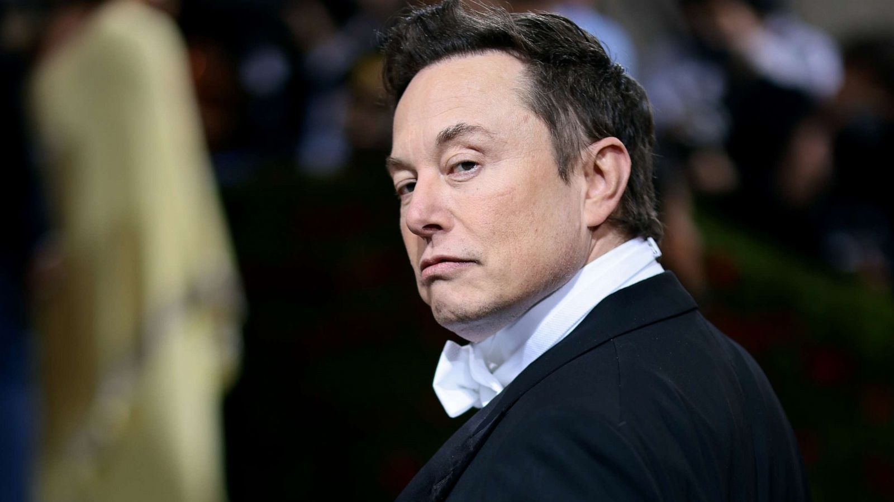

Steve Jobs
Steve Jobs, nacido en 1955, fue un empresario e informático estadounidense, cofundador de Apple. Revolucionó la industria de la informática, la telefonía móvil y la música digital. Creó el primer ordenador personal y fundó Pixar. A pesar de los desafíos, su visión y creatividad dejaron un legado duradero

Elon Musk
Elon Musk, nacido en 1971 en Sudáfrica, es un programador y empresario reconocido mundialmente. Fundó empresas como PayPal, Tesla Motors, SpaceX, entre otras. Musk ha dedicado su carrera a resolver dilemas a largo plazo para la humanidad, como el riesgo climático y la dependencia de un solo planeta.
Bill Gates
Bill Gates, nacido en 1955, es un empresario y programador estadounidense, cofundador de Microsoft. Estudió en Harvard, donde conoció a Steve Ballmer. Bajo su liderazgo, Microsoft se convirtió en una de las empresas más grandes del mundo. Gates es conocido por su filantropía a través de la Fundación Bill y Melinda Gates